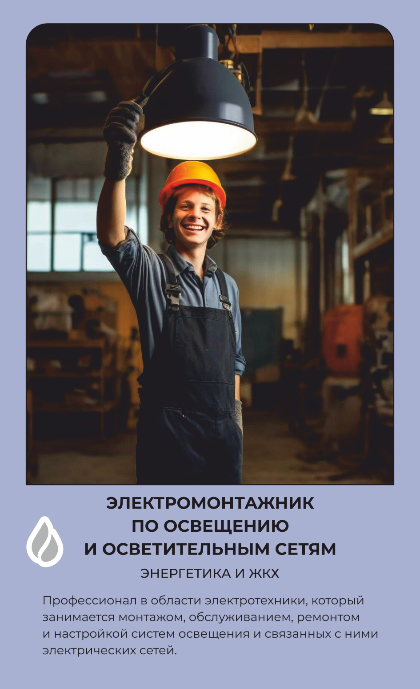

Электромонтажник по освещению и осветительным сетям
Монтирует освещение и осветительные сети.
Основной вид деятельности
Профессионал в области электротехники, который занимается монтажом, обслуживанием, ремонтом и настройкой систем освещения и связанных с ними электрических сетей.
Что делает на рабочем месте
Электромонтажник по освещению монтирует светильники, прожекторы и лампы — от офисных потолков до уличных опор и сценического освещения, — а также прокладывает кабели, устанавливает выключатели и диммеры, которые ими управляют. Перед подключением собирает схему защиты и управления, проверяет её электрифицированным инструментом и сварочным аппаратом, если нужно соединить металлические конструкции. Работу часто ведёт на высоте — на опорах, фасадах или в подвесных потолках, — поэтому при монтаже пользуется предохранительным поясом и защитной каской. Настраивает и проверяет готовую сеть на соответствие нормам электробезопасности, прежде чем включить её под напряжение. На открытых объектах — уличном освещении или стройплощадках — работает в любую погоду, а зимой добавляет утеплённый костюм и подшлемник. От качества его монтажа зависит не только свет в помещении, но и безопасность всей электрической сети здания.
Что производит
обеспечивает правильную и безопасную установку осветительных систем в различных объектах, от жилых и коммерческих зданий до уличного и сценического освещения, соблюдая при этом нормы и стандарты электробезопасности.
Оборудование и инструменты
Спецодежда и СИЗ
одежды
Костюм "Электромонтер" или Комбинезон для защиты от общих производственных загрязнений и механических воздействий Головной убор сигнальный Перчатки комбинированные или Перчатки с полимерным покрытием Перчатки трикотажные Жилет сигнальный 2 класса защиты При выполнении работ на высоте дополнительно: Пояс предохранительныйдежурный Каска защитная При работе в неотапливаемых помещениях или на наружных работах зимой дополнительно: Комплект для защиты от пониженных температур "Энергетик" Подшлемник для защиты от пониженных температур со звукопроводными вставками (под каску) Перчатки утепленные
Спецобувь
обуви
Ботинки юфтевые на полиуретановой подошве При работе в неотапливаемых помещениях или на наружных работах зимой дополнительно: Сапоги юфтевые утепленные на нефтеморозостойкой подошве или Валенки (сапоги валяные) с резиновым низом
Где учиться
08.02.09 Монтаж, наладка электрооборудования промышленных и гражданских зданий,
Где работать
Данные — карточка 35 из 160, отрасль «Энергетика и ЖКХ». Зарплата — оценочная вилка по региону.